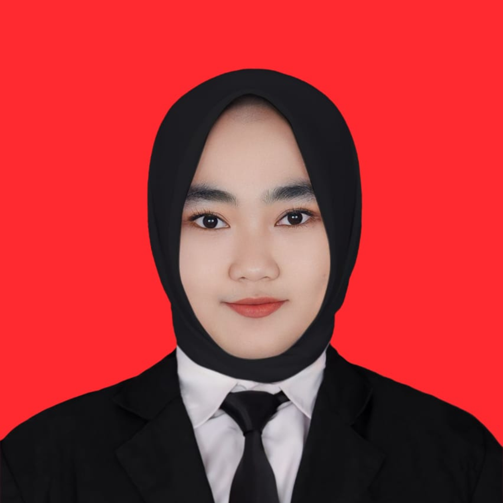

Portofolio Refleksi
Pengalaman Belajar
Perjalanan seorang calon guru dalam membangun kompetensi
Nama
Reffinka Meisya I.
NPM
26530098
Kelas
PGSD Kelas B
Program
PPG 2026
Universitas
Universitas PGRI Semarang
Scroll ke bawah atau klik tombol di atas
Kata Pengantar
Portofolio ini berisi kumpulan hasil refleksi pengalaman belajar dari setiap mata kuliah yang telah saya tempuh selama Semester I sebagai mahasiswa Pendidikan Profesi Guru (PPG) Calon Guru Tahun 2026 di Universitas PGRI Semarang.
Portofolio ini disusun sebagai bentuk dokumentasi perjalanan akademik dan refleksi diri selama mengikuti proses pendidikan profesi. Melalui portofolio ini, saya merefleksikan berbagai pengalaman, pengetahuan, keterampilan, tantangan, serta perubahan yang saya alami selama mengikuti perkuliahan dan kegiatan praktik di sekolah.
Setiap refleksi dalam portofolio ini menggambarkan keterkaitan antara materi yang dipelajari dalam perkuliahan dengan pengalaman nyata sebagai calon guru. Selain itu, portofolio ini juga memuat berbagai artefak pembelajaran yang menjadi bukti perkembangan kompetensi saya, baik dalam memahami karakteristik peserta didik, merancang dan melaksanakan pembelajaran, melakukan asesmen, mengelola kelas, maupun melakukan evaluasi dan refleksi terhadap proses pembelajaran.
Penyusunan portofolio ini diharapkan dapat menjadi sarana bagi saya untuk melihat kembali proses perkembangan diri selama Semester I, mengenali kekuatan dan tantangan yang telah dihadapi, serta menentukan perubahan dan perbaikan yang perlu dilakukan untuk menjadi guru yang profesional, reflektif, adaptif, dan berpihak pada peserta didik.
"Dengan demikian, portofolio ini tidak hanya menjadi kumpulan tugas dan dokumen pembelajaran, tetapi juga menjadi gambaran perjalanan saya dalam membangun identitas dan kompetensi sebagai calon guru melalui proses belajar yang berkelanjutan."
Arah Langkahku
Klik tombol di bawah untuk melihat detail
Saat ini, saya merupakan mahasiswa PPG Calon Guru Tahun 2026 di Universitas PGRI Semarang. Menjadi bagian dari program ini merupakan langkah besar bagi saya untuk mengembangkan kemampuan dan kompetensi sebagai calon pendidik yang profesional, kreatif, dan inspiratif.
Tujuan saya menjadi seorang guru adalah untuk membantu peserta didik memperoleh ilmu pengetahuan, mengembangkan potensi diri, serta membentuk karakter yang baik agar mereka dapat meraih cita-cita dan menjadi pribadi yang bermanfaat bagi masyarakat. Saya ingin menjadi guru yang tidak hanya mengajar materi pelajaran, tetapi juga mampu membimbing, memberikan motivasi, dan menjadi teladan bagi peserta didik dalam kehidupan sehari-hari.
Selain itu, saya juga ingin menciptakan suasana pembelajaran yang menyenangkan, kreatif, dan mudah dipahami sehingga murid merasa semangat dalam belajar. Melalui profesi guru, saya berharap dapat memberikan kontribusi positif bagi dunia pendidikan serta ikut berperan dalam mencerdaskan generasi penerus bangsa.
Sejak duduk di bangku Sekolah Dasar, saya sudah bercita-cita ingin menjadi seorang guru. Ketika ditanya mengenai cita-cita, saya selalu menjawab ingin menjadi guru karena selama sekolah saya banyak bertemu dengan bapak dan ibu guru yang memberikan kesan baik dalam hidup saya. Guru tidak hanya mengajarkan ilmu, tetapi juga mendidik, membimbing, dan memberikan dampak positif kepada peserta didik.
Melihat kesabaran dan perjuangan guru dalam menghadapi banyak murid dengan karakter yang berbeda-beda membuat saya semakin terinspirasi pada profesi yang mulia ini. Saya menyadari bahwa tugas guru tidak hanya mengajar, tetapi juga membentuk karakter dan membantu murid meraih cita-citanya.
Motivasi saya menjadi guru juga semakin kuat karena dukungan orang tua yang memandang bahwa guru adalah pekerjaan yang mulia dan bermanfaat bagi banyak orang. Oleh karena itu, saya ingin menjadi guru yang dapat memberikan ilmu, motivasi, dan pengaruh positif bagi murid di masa depan.
"Menjadi guru yang humanis, kontekstual, dan adaptif terhadap perkembangan zaman; mampu menjadi teladan, membangkitkan semangat, serta memberdayakan peserta didik melalui pembelajaran yang bermakna, dekat dengan kehidupan nyata, dan didukung pemanfaatan teknologi secara bijaksana, sehingga mampu membentuk generasi yang berkarakter, kritis, kreatif, mandiri, dan siap menghadapi masa depan."
-
1
Mengembangkan kompetensi diri secara berkelanjutan sebagai pendidik agar mampu mengikuti perkembangan zaman, memahami kebutuhan peserta didik, dan memberikan pembelajaran yang relevan.
-
2
Menyelenggarakan pembelajaran yang kontekstual dan bermakna dengan menghubungkan materi pembelajaran dengan kehidupan sehari-hari, lingkungan sekitar, serta permasalahan nyata yang dihadapi peserta didik.
-
3
Mengintegrasikan perkembangan teknologi dalam proses pembelajaran secara bijaksana untuk menciptakan pembelajaran yang inovatif dan menarik, dengan tetap mengutamakan pembentukan karakter, tanggung jawab, kemandirian, dan nilai-nilai kemanusiaan.
Refleksi Mata Kuliah
Klik tombol mata kuliah untuk melihat refleksi (4C) dan artefak
Galeri
Kegiatan perkuliahan semester 1
Refleksi Mata Kuliah 2
Klik tombol mata kuliah untuk melihat refleksi (4C) dan artefak
Penutup
Portofolio Refleksi Hasil Belajar Setiap Mata Kuliah Semester I sebagai Mahasiswa PPG Calon Guru Tahun 2026 Universitas PGRI Semarang merupakan gambaran perjalanan belajar, pengalaman, serta perkembangan kompetensi saya selama mengikuti proses Pendidikan Profesi Guru. Melalui penyusunan refleksi pada setiap mata kuliah, saya dapat mengevaluasi proses belajar, memahami berbagai tantangan, serta mengidentifikasi hal-hal yang perlu terus dikembangkan sebagai calon guru.
Saya menyadari bahwa menjadi seorang guru merupakan proses belajar yang berkelanjutan. Oleh karena itu, pengalaman dan pembelajaran selama Semester I menjadi bekal bagi saya untuk terus meningkatkan kompetensi, melakukan refleksi, terbuka terhadap masukan, serta berusaha memberikan pembelajaran yang bermakna bagi peserta didik.
Saya mengucapkan terima kasih kepada Bapak/Ibu dosen, dosen pembimbing, guru pamong, kepala sekolah, bapak/ibu guru, tenaga kependidikan, seluruh warga sekolah, peserta didik, keluarga, dan teman-teman seperjuangan yang telah memberikan ilmu, bimbingan, dukungan, serta pengalaman berharga selama proses perkuliahan dan praktik.
Semoga portofolio ini dapat menjadi dokumentasi yang bermakna
atas proses belajar dan perkembangan saya, sekaligus menjadi
motivasi untuk terus bertumbuh menjadi guru yang profesional,
reflektif, adaptif, dan berpihak pada peserta didik.
Terima kasih atas setiap ilmu, bimbingan, pengalaman, dan
dukungan yang telah menjadi bagian dari perjalanan saya dalam
belajar dan berkembang sebagai calon guru.